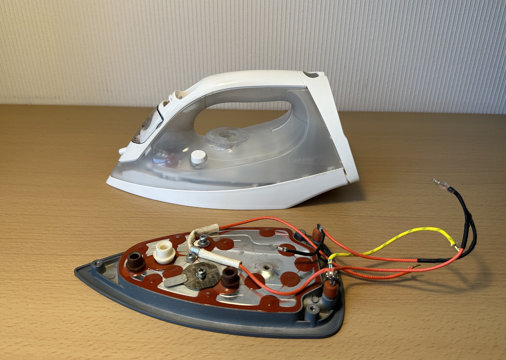

Programming, electronics, lifestyle
Сборка паяльного стола своими руками из старого утюга
Привет, я всё больше начинаю паять SMD компоненты и многослойные платы с большой массой. Для пайки первых может использоваться паяльный стол, это когда печатная плата с нанесенной паяльной пастой и компонентами ставится на нагреваемую поверхность и нагревается для плавки пасты. А второе это нижний подогрев для пайки плат с массивной массой (например, видеокарты).
Собственно купить готовое решение не особо интересно, и хочется собрать что-то из того барахла, что уже есть, не плодя новое. Статья обещает стать бич инструкцией для сборки паяльного стола.
Естественно такое уже делали и другие:
- Печка из старого утюга для запекания паяльной пасты
- Паяльный стол для светодиодов или каша из утюга
- ПАЯЛЬНАЯ СТАНЦИЯ ИЗ УТЮГА ?! ПАЯЕМ SMD И НЕ ТОЛЬКО
Компоненты корпуса
За основу взят утюг, который я взял из специальной урны для сдачи старой электротехники в ближайшем супермаркете.

С виду он казался вполне рабочим, но после разборки оказалось, что он сильно проржавел в узлах связанных с водой. И не мог больше нормально функционировать по прямому назначению.
Нагреватель в утюге на 1600 Вт, что вроде как совсем не мало даже для моей задачи.
Оказалось, что в белом кембрике был термо-предохранитель от перегрева более 240 градусов, надеюсь, что после его удаления и нагрева более этой температуры, у меня не начнет гореть покрытие утюга.
Также на заднем плане можно видеть круглую пластину с лепестком, это тоже темозащита. Я не стал её снимать, тк у меня нет этой контактной цепи, и просто интересно посмотреть как она будет себя вести.
В качестве корпуса я решил использовать корпус от небольшого блока питания компьютера HP-L1520F3P формата Flex ATX или близкого к нему. Который также был найден в этой урне.
Распологать компоненты я буду на родную плату блока питания, полностью очищенную от медных дорожек и всех загрязнений.
Мне очень понравилось, что утюг идеально помещается в рамках размеров корпуса и устройство при этом компактно.
В нижней части корпуса я просверлил отверстия под резиновые ножки. Я решил не разносить ножки по краям, что добавило бы устойчивости, в пользу некоторой эстетики при размещении ножек на штампованных пяточках.
Далее я решил использовать дополнительную плату от МФУ, полностью очищенную от компонентов, как переходную пластину для крепления нагревателя к корпусу. Также я расчитываю, что эта пластина будет являться термоизолятором и предотвратит сильный нагрев железного корпуса.
Как видно, на заднем фоне уже встал небольшой трансформатор, который в последствии будет питать электронику внутри корпуса.
От ушка на корпусе я решил избавиться, тк при креплении за него, увеличивались размеры аппарата, а также это 100% привело бы к нагреву корпуса.

Удалил я его аккуратно старым лезвием от ножа и молотком.
Получился вот такой бутерброд:
Ну и финально, после сборки корпуса выглядит это все вот так:
Да, в качестве дисплея решил использовать довольно яркий 4х секционный 7ми сегметный индикатор от Amperka.ru через бывшее вентиляционное отверстие.
Силовая часть
Для коммутирования мощной нагрузки (например, утюга) могут использоваться разные решения. У Alex Gyver есть неплохая статья про это.
Если коротко, тк мы говорим, о переменном токе, есть два решения: реле и симистор. Ввиду того, что я хочу, чтобы паяльный столик мог поддерживать заданную температуру, я планирую использовать ШИМ, в связи с чем использование реле отпадает.
Давайте рассмотрим два варианта управления симистором и выберем один:
- В качестве ключа, в этом случае мы управляем нагрузкой через оптопару с симисторным выходом и детектором нуля. Логика управления такая: подали логическую единицу/ноль на оптопару, и в следущий переход через ноль симистор открылся/закрылся. Принципиальная схема такого решения:
- В качестве диммера. В случае использования оптопары без детектора нуля, возможно открытие симистора в любой момент времени. Таким образом, меняя время подачи логической единицы на оптопару, после прохождения нуля, мы можем регулировать скважность получаемого сигнала силового выхода. Это называется фазовым управлением. Также в этом случае требуется контролировать момент прохождения нуля, чтобы знать когда подать импульс для включения симистра. И обычно это решается дополнительной оптопарой с возможностью коммутации переменным током: Или обычной оптопарой и диодным мостом:
Фазовое управление необходимо для плавной регулировки мощности, тк обычное управление в режиме ключа не может дать частоты больше чем 50Гц x 2 = 100Гц. В моём случае, при использовании нагревателя утюга в качестве нагрузки, в плавном управлении нужды нет. И я выберу первую схему, тем более, что она проще и у меня уже есть оптопара с симисторным выходом и детекцией нуля.
Оптопара с симисторным выходом у меня уже была, откуда-то выпаянная 100лет назад – TLP3061F (datasheet). А симистор пришлось купить за 65 центов в местном магазе. Взял модель BT138-600E (datasheet) на 12 ампер. Исходил из того, что ток утюга 1600 Вт / 220 Вольт = 7 Ампер.
{kind=link}
Далее когда я определился со схемой и основными компонентами, нужно было определиться в номиналах соответствующих резисторов и конденсатора, а также решить на какую расчетную мощность ставить эти компоненты. Первое, что я сделал – пошел в интернет и начал гуглить готовые схемы подключения с номиналами, и вот примерно, что я находил.
В целом все схемы схожи, разве что в одной отсутствует RC-цепочка. А вот в схеме ниже (источник: Theremino Optotriacs – A Solid State Relay 3KW) подключение оптосимистра выполнено непосредственно в плечо RС-цепочки, мне этот вариант не особо понравился. Тк я не особо понимаю, что этим решением автор выиграл, а схему усложнил.
Для этой схемы я также нашел рендер того, как будет выглядеть собранная плата с компонентами.
Главное, если сравнить схемы, будет видно, что практически везде так или иначе используются разные номиналы резисторов. Я решил, что при таком раскладе слепо следовать одной из схем - путь в никуда и решил разобраться в причинах выбора тех или иных номиналах, а также разобраться в вопросе: “А для чего нужна RС-цепочка?". Поэтому давайте дальше возьмем за основу, одну схему и разберемся в номиналах компонентов для моего случая, а также ответим на вопрос что за что отвечает:
В качестве источника информации для ответов на эти вопросы, я нашел несколько неплохих статей, которые мне помогли разобраться как работает симистор и как построить схему для управления им:
- Симисторная оптопара. Управление симистором.
- Симистор
- СИМИСТОР. ОПИСАНИЕ, ПРИНЦИП РАБОТЫ, СВОЙСТВА И ХАРАКТЕРИСТИКИ.
- Симисторы: принцип работы, проверка и включение, схемы
- Способы и схемы управления тиристором или симистором
При выборе компонентов я буду исходить из двух факторов: расчетная величина и то, что у меня есть подходящего дома.
Токоограничительный резистор в цепи питания оптопары
Начнем с R4. Это токоограничительный резистор в цепи питания оптопары (оптосимистра). Для моего оптосимистра TLP3061F, судя по datasheet максимальный ток питания светодиода внутри оптопары – 15 мА (10 мА номинально). При этом токе исходя из таблицы Individual Electrical Characteristics падение напряжения (Forward voltage (VF)) = 1.15 Вольта.
В качестве источника сигнала я буду использовать 5 вольтовую логику. Следовательно, нам нужно подобрать такой резистор, который при токе 10 мА (0.01 А) (тк это последовательная цепь, ток в цепи везде одинаковый), возьмет на себя 3.85 Вольта (5 Вольт - 1.15 Вольта). Тогда по закону Ома:
R4 = (5 - 1.15) / 0.01 = 385 Ом
Мощность которая будет рассеиваться на данном резисторе будет:
P(R4) = 3.85 * 0.01 = 0.000385 Вт, что меньше одного миллиВатта, соответственно можно взять любой типоразмер.
Кстати говоря, немного странно, тк в принципиальной схеме из того же datasheet используется резистор в 120 Ом. Но больше не меньше, понизить можно будет всегда.
Тк светодиод внутри оптопары может работать и при более низком токе, а также исходя из того, что у меня было дома я использовал резистор на 470 Ом. Что соответствует току в 8 мА.
RC-цепочка и резистор R1
У симистров есть пара недостатков (источник):
- Проблемы связанные с работой на высоких частотах,
- Подверженность влиянию переходных процессов нагрузки, шумов и помех в сети.
Давайте сначала рассмотрим возможные типы нагрузок:
- Резистивные нагрузки, которые представляют собой электрические устройства, преобразующие электрическую энергию в тепло.
Примеры резистивных нагрузок включают электрические нагревательные элементы, электрические плиты, обогреватели, электрические нагревательные котлы. - Индуктивные нагрузки, которые включают катушки или индуктивные элементы и создают магнитное поле при прохождении электрического тока через них.
Примеры индуктивных нагрузок включают электродвигатели, трансформаторы, катушки индуктивности. - Емкостные нагрузки, которые содержат конденсаторы и хранят электрическую энергию в электрическом поле.
Примеры емкостных нагрузок включают конденсаторы в блоках питания, фильтрах, электролитических конденсаторах.
Первый тип нагрузок иначе называют активными, а вторые и третьи – реактивными (вики).
В случае высокой скорости коммутации, велика вероятность самопроизвольного срабатывания симистра. Помеха в виде броска напряжения, вызванная переходными процессами в индуктивных нагрузках (например, в электродвигателях), также может привести к этому результату. Для предотвращения ложных срабатываний, симисторы должны иметь дополнительные компоненты защиты.
- В случае индуктивной нагрузки как правило добавляют демпферную RC-цепочку (снабберную цепь) между силовыми электродами симистра, которая используется для ограничения скорости изменения напряжения.
- В случаях, когда нагрузка имеет ярко выраженный ёмкостной характер, между силовыми электродами необходима индуктивность для ограничения скорости изменения тока при коммутации.
Дополнительной защитой может служить параллельно подключенный к симистру – варистор.
Помимо использования защитных цепей рекомендуется минимизировать длину проводов ведущих к управляемому выводу, или в качестве альтернативы использовать экранированные проводники. Также практикуется установка шунтирующего резистора между выходом оптосимистра и затвором симистра.
Защитная цепочка для симистора просто необходима. Для оптосимисторов с обнаружением нуля, такой как TLP3061F — желательна. Утюг это резистивная нагрузка, в отличие от электромотора, но я всё же решил использовать снабберную цепь. По большей части тк она ничего не ухудшит, а также потому что большинство схем (в том числе ту, которую я взял за основу) как раз расчитаны с её использованием.
Обычно применяют эмпирически значения R3 и C1 – 39-470 Ом, и 100-1000 нФ (источник). Во многих источниках стоят именно 39 Ом и 100 нФ. Я в целом доверяю эмпирически вычисленным значениями, и соглашусь в том, что выбор этих значений отдельная большая тема. Дополнительные рассуждения по выбору RC-цепочки вы можете найти в форуме radiokot.ru.
Однако, давайте рассчитаем сопротивление RC-цепочки при питании от сети переменного тока в 220 Вольт. Это нужно в целом, чтобы убедиться, что снабберная цепь не будет работать с сетью питания. Сопротивление снабберной цепи будет складываться из сопротивления резистора – 39 Ом, а также из реактивного сопротивления конденсатора, рассчитываемого по формуле:
C = 10 nF = 10 * 10^-9 = 10^-8 F
f = 50 Hz
ω = 2πf = π * 100
R(C) = 1 / ωС = 1 / 2πfC = 1 / (2 * 3.1415 * 50 * 10^-8) = 10^6 / 3.1415 = 318.32 кОм
Соответственно ток протекающий через снабберную цепь при отсутствии помех от нагрузки будет:
Примем за максимальное значение действующего напряжения в сети 260 вольт.
U = 260 х √2 = 368 Вольт (постоянного напряжения)
I = U / R = 368 / (39 + 318320) = 1.2 мА
Это означает, что применяемая цепочка практически не будет влиять на входную сеть. В случае скачкой напряжения вызванных перебоями входной сети или индуктивной нагрузки => увеличением частоты, будет увеличиваться ток в снабберной цепи, тем самым ограничивая собой скачки напряжения.
Для высокоиндуктивной нагрузки значение R3 необходимо увеличить до 360 Ом.
Я использовал резистор на 47 Ом мощностью 1 Вт.
Резистор R1
Резистор R1 позволяет ограничить ток через управляющий электрод оптосимистора. В случае индуктивной нагрузки проходящий через симистор ток и напряжение находятся в противофазе. Так как симистор перестает быть проводником, когда ток проходит через ноль, конденсатор C1 может разряжаться через оптосимистор. Тогда резистор R1 ограничит этот ток разряда. Зная, что максимально допустимый ток для оптосимистора 1 А и, приняв за максимальное значение действующего напряжения в сети 260 вольт, рассчитаем минимальное значение сопротивления R1:
R = 260 х √2 / 1 = 368 Ом (ближайшее 360 Ом)
Слишком большая величина может привести к нарушению работы симистра, тк будет ограничен ток для управления его затвором.
Источник: Симисторная оптопара. Управление симистором.
Я использовал двухваттный советский резистор на 910 Ом.
У меня была совершенно аналогичная история той, что была изложена на форуме radiokot.ru по этой схеме:
Проблема стара как мир – ошибка при монтаже: не подсоединил T2 симистра, он просто висел в воздухе.
Из-за чего при подключении слабой нагрузки вроде светодиодной лампы она работала через оптосимистор, а при подключении более мощной нагрузки сильно грелся токоограничетельный резистор R1. Благодаря нему и тому, что когда я производил тесты, при возникновении перегрева, я тут же отключал питание я не сжёг оптосимистор.
Повезло ещё и то, что резистор подходящего номинала у меня был только мощностью в 2 Вт (что с большим запасом).
Резистор R2
Значение резистора R2 может быть в диапазоне от 100 до 500 Ом. Резисторы R1 и R2 вводят задержку отпирания симистора, которая будет тем значительнее, чем выше сопротивления этих резисторов. Другими словами они, беря на себя часть напряжения, увеличивают напряжение необходимое для отпирания симистра в полупериоде.
Я использовал резистор в 240 Ом и мощностью в 1 Вт.
Полученный результат
Управляющая часть
Я хотел собрать управляющую часть на базе мк Atmega 168PA (из старого полётного контроллера, который никогда больше не будет использован по прямому назначению, ввиду сильнейшего морально устаревания). И, конечно, потому что мне нравится писать код с использование фреймворка Arduino. Однако у меня так и не удалось заставить корректно работать дисплей на с этой платой. На плате отсутвует кварц, поэтому я выставлял тактирование в 8 и 1 МГц, но безуспешно, возможно в дальнейшем разберусь в чем проблема. Поэтому просто взял Arduino Nano на мк Atmega 328P.
В качестве датчика температуры использовал термистор с отрицательным коэфициентом от 3д принетера, который у меня остался после модернизации головы принтера. Подробнее о подключении термисторах и их подключении к Arduino в статье Ардуино: терморезистор NTC 100K.
Я также использовал небольшую макетную плату для размещения разводки и расположения разъёмов DuPont.
Для питания я использовал трансформатор, диодный мост и электролитический конденсатор – данная схема даёт 10 Вольт, которые я подаю на Vin Arduino. А Arduino используя линейный стабилизатор даёт 5 Вольт для питания всей логики и дисплея.
В качестве элемента управления я использовал реостат на 1 МОм, для поглащения помех на котором между средним выводом и землей размещён керамический конденсатор на 100 нФ.
Алгоритм управления
В качестве управляющего алгоритма я использую ПИД регулятор, а точнее только ПИ регулятор. Опять же у Alex Gyver есть отличная статья и даже библиотека на эту тему.
Далее результирующий сигнал с ПИД регулятора нужно преобразовать в ШИМ для управления силовой цепочки. В принципе можно использовать стандартную функций Arduino – analogWrite() (как в статье ПИД регулятор температуры на Arduino, термопаре и модуле MAX6675), однако стандартная модуляций Arduno работает на частоте 488.28 Гц (источник Arduino PWM — Широтно Импульсная Модуляция), что близко к слышемому ухом человека пределу, также в целом избыточно, тк для управления утюгом можно использовать и более низкую частоту вплоть до десятых Герца.
В дальнейшем планирую использовать частоту в 10 Гц для этих целей. Я полагаю этого будет достаточно. Для коммутирования я буду использовать готовую библиотеку для ШИМ от Alexgyver (github).
Исходный код пока публиковать не планирую, тк не особо горжусь им и считаю что нужно все хорошо отладить, произвести настройку ПИД регулятора
Подобные решения
- Световой диммер управляемый Arduino
- Симистор + Arduino
- Термостат для инкубатора или PID регулятор на arduino (youtube)
Результат
Ну и бонусом демонстрация работы:
Updates
- После 350 градусов терморезистор уходит в ошибку и выдает -73 градуса из-за чего начинается неконтролируемый нагрев. Думаю с этим еще поработаю, пока не критично.